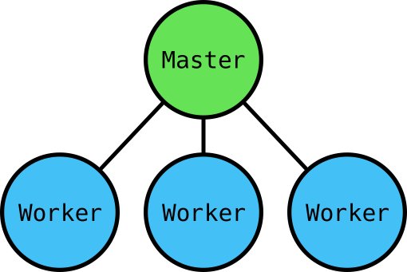

Cloud Infrastructure with Kubernetes
Who, How, Why and When?
Ben Avellone // CEO // Coastware Technologies
Coastware Technologies
- Business-class software applications and comprehensive IT services
- Adopted Kubenetes in early 2017, now managing all of Coastware's web services
- Limited time & resources to spend on infrastructure
What is Kubernetes?
"Pilot/Helmsman" in Greek
Initially built inside Google based on Borg and Omega - Google's internal systems that power search, video and advertising services
Set of tools, concepts and APIs designed to deploy, scale and maintain containers running on a cluster of machines
Building Blocks: Containers
- Contains all libraries and code needed by application
- Less overhead and lower start-up time than VMs
- Easy to compose and replace
Why Kubernetes?
Strong community: 1800+ contributors, used by F500 companies and startups alike
Runs everywhere: Public cloud, private cloud, bare metal, laptop
Batteries included: Lots of functionality out-of-the-box
Problems where Kubernetes can help
Operations
- Applications and machines crash - the more you have the more often it will happen
- Scaling infrastructure can be a slow, error-prone and manual process
- Staff need to be on-call 24/7 to respond to inevitable crisis at 3am
- Existing infrastructure is brittle and cumbersome or limited in features or guarantees
Business
- Hiring and training staff on bespoke infrastructure can be difficult and expensive
- More personnel are needed to manage ever-growing infrastructure
- Brittle infrastructure increases risk of mistakes, errors and oversights
Building Blocks: Deployment
Our application is packaged up into a container
How do we run, update and scale it?
- Manual - Humans
- Automated - Scripts
- Automated - Orchestrator
Deployment: Humans
Pros: simple - minimal tooling, configuration and setup required
Cons: not automated, error-prone, doesn't scale, problems require manual troubleshooting
Deployment: Scripts
Pros: integrates with existing infrastructure, reproducible, auditable
Cons: manual placement of containers on machines, becomes unmanageable for larger systems
Deployment: Orchestration
Pros: automated, self-healing, scalable, portable
Cons: some overhead, learning curve, new tooling
Building Blocks: Orchestrators
Scheduling: match containers to machines
- by resource needs (CPU, Memory)
- by affinity requirements (put X near Y)
- by labels (put X on a "test" machine)
Replication: run N copies
Recovery: handle machine failures
Nodes
Machine running Kubernetes

Pods
Group of cooperating containers
kind: Pod
metadata:
name: my-website-1
labels:
app: my-website
spec:
containers:
- name: webserver
image: my-website-v1.0
ports:
- containerPort: 80
Deployment
Manages the lifecycle of a group of pods
kind: Deployment
metadata:
name: my-website
spec:
replicas: 3
selector:
matchLabels:
app: my-website
template:
metadata:
labels:
app: my-website
spec:
containers:
- name: webserver
image: my-website-v1.0
ports:
- containerPort: 80
Service
A service forwards traffic to a group of pods
kind: Service
metadata:
name: my-website
spec:
selector:
app: my-website
ports:
- name: http
port: 8000
targetPort: 80
Labels
- Arbitrary metadata
- Attached to any API object
- Used to represent identity
- Queryable by Selectors
- The only grouping mechanism
app=my-app
role=frontend
role=backend
stage=prod
stage=dev
Selectors
- app=my-app
- role=front-end
- role=back-end
- stage=prod
- stage=dev
app=my-app
role=frontend
stage=prod
app=my-app
role=frontend
stage=dev
app=my-app
role=backend
stage=prod
app=my-app
role=backend
stage=dev